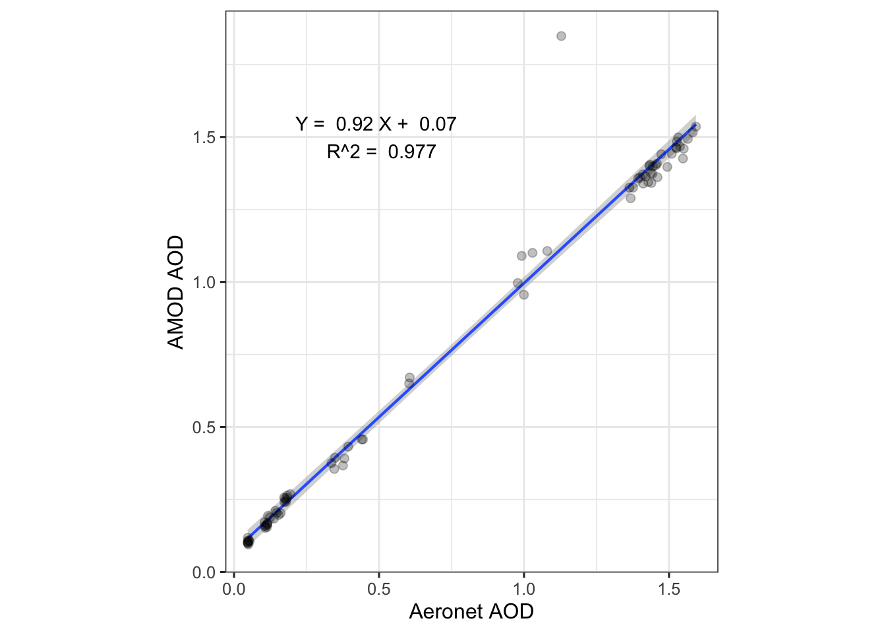

Chapter 11 Modeling
A model is a system of postulates, data, and inferences presented as a mathematical description of an entity or state of affairs.
In this chapter we will discuss how models are conceptualized and “fit” to represent the data we have available. Models are useful because they provide a mathematical basis for how we see the world (i.e., an explanation for the observational data we collect). This means that models can help you:
- quantify patterns or trends in your data;
- extrapolate your data (i.e., to guess an outcome outside the range of observed values);
- interpolate your data (i.e., to guess an outcome within the range of observed values but not at a location where data has been observed)
- predict future outcomes;
- conect theory (what you think should happen) to observation (what you actually see happen);
“All models are wrong, but some are useful” - George Cox, pioneering statistician
11.1 Ch. 11 Objectives
This chapter is designed around the following learning objectives. Upon completing this chapter, you should be able to:
- Describe the steps of model conceptualization, fitting, evaluation, and validation.
- Develop and fit linear models to continuous, bi-variate data
- Evaluate the assumptions of linear regression with visual diagnostics
- Apply transformation techniques to meet linear model assumptions
- Describe the process of parameter estimation using ordinary least squares
11.2 Process Modeling
Figure 11.1 below provides a general process diagram for modeling (adapted from the NIST Handbook on Statistics); these are the steps you should follow when developing a model. Even before you begin this process, however, you should ask yourself the following three questions:
- Why am I developing this model?
- What do I hope to learn from this model?
- What do I plan to do with this model?
The answer to these questions will undoubtedly guide your thinking as you move through the process steps; it’s important to have objectives and expectations at the start. Without purpose, a process model often comes up short.
Figure 11.1: A generic process diagram for model conceptualization, development, and evaluation.

A couple points worth making about the process outline in Figure 11.1. First, observing a process and matching your observations to your training and experience is an invaluable tool for model construction. Second, most models of “real-world things” like Newton’s work on gravity or Milliken’s model of elctron charge are empircal - that is, they are based on observation (not pure math). Purely analytic models exist (mostly as mathematical “proofs”) and such models don’t need data to be “fit” but do need data to be validated. Third, many people choose to validate their model with the same data they used to fit the model (using an approach like blocking or cross-validation). While I acknowledge that this approach is convenient (and sometimes the only means available), I disagree with it. You should always try to validate your model with an independent sample (better yet, with a sample that you didn’t collect). Why? Although we put a lot of emphasis on “random sampling”, we rarely succeed at it in the real world. Having someone else validate your model with their (independent) data will go a long way towards convincing others that your model is both useful and generalizable.
11.2.1 Assumptions
An assumption is a fact or condition that is taken for granted. If you think about it, nearly every action you undertake carries assumptions. If someone throws a baseball to you and you reach out your hand to catch it, you are assuming that you will indeed make that catch. Otherwise, you would probably duck! When you walk across a high bridge, you undoubtedly assume that it will hold your weight. Sure, you might have a compelling reason to cross the bridge at any cost, but in that case you have assumed that the reason for crossing the bridge outweighs other risks. Those of us who live in Colorado have, at one point, made the incorrect assumption about our car or truck’s braking ability in the snow.
All scientific models are based on assumptions; many of those assumptions are necessary (read: critical) for the model or theory to be “correct”.
Although assumptions can be taken for granted when constructing a model or theory, that doesn’t mean they should be ignored. Indeed, evaluating the assumptions of a model (or theory) is one of the first things that you should do when developing OR evaluating OR applying it. Testing assumptions is the hallmark of a talented researcher, and yet, few researchers test their model assumptions regularly.
In this chapter, I will teach you about the assumptions of linear regression, but the take-home lesson is this: those who recognize and validate their assumptions will be rewarded for their efforts, prepared for what is to come, and will rarely depend on luck for success.
11.3 Model Fitting
“The purpose of models is not to fit the data but to sharpen the questions.” - Samuel Karlim, mathematician and genomicist
The best models are those that advance your understanding of a phenomenon so well that you soon leave the model behind, because the questions have since changed. We will not aspire to such great heights here, but it’s worth understanding how models can be fit to data. Model construction, fitting, and validation could represent an entire semester (or more) of work. Here, will will discuss one introductory application: fitting of a linear model using ordinary least squares (OLS). You have undoubtedly used a computer program to create a linear fit between an X and Y variable. Microsoft Excel will do this for you with two columns of data and a few simple mouse clicks. How that fit is achieved (and what assumptions underpin that fit) is what we will discuss here.
11.4 OLS Regression
OLS stands for “Ordinary Least Squares”. The OLS technique is one of the most common ways to fit a linear regression. To keep things simple, let’s discuss fitting a model with a single independent variable (\(X\)) as a predictor for our (dependent) outcome variable of interest (\(Y\)). A model with one instance of a single independent variable means we have, at maximum, only two parameter estimates to fit: the intercept term when \(X = 0\) (which we call \(\beta_{0}\)) and the slope term for all values of \(X\) (which we call \(\beta_{1}\)). Thus, we are fitting a straight-line equation between two variables with the following notation:
\[Y = \beta_{0} + \beta_{1}\cdot X + \epsilon\] where:
\(Y\) = the dependent variable (i.e, the outcome - what we are trying to model)
\(\beta_{0}\) = the intercept parameter (to be fit by OLS model)
\(\beta_{1}\) = the slope parameter (to be fit by the OLS model)
\(X\) = the independent variable (i.e., the predictor variable)
\(\epsilon\) = the error term (i.e., what is left over; what the model doesn’t explain about \(Y\))
The OLS approach is straightforward: select model parameters (\(\beta_{0}\), \(\beta_{1}\)) so that the model produces as little error as possible. With OLS, the overall model error is expressed as the sum of each residual value squared: a sum-of-squares error (SSE; explained below). Graphically, this is shown in Figure 11.2, where the solid blue circles represent the data (\(X_{i}, Y_{i}\)). The grey line represents the “best fit” line that gives the smallest SSE possible. The model residuals (what are used to calculate the SSE) are denoted by vertical lines connecting the data points to the “best-fit line”. The optimization algorithm that sets the slope and intercept to minimize the sum of squares error is executed with matrix algebra, although the paramaters for simple linear regression between two variables, \(X,Y,\) are easily calculated - see here.
Figure 11.2: Graphical depiction for an OLS regression fit to minimize the sum of squared residuals
The Y values predicted by the model are denoted as \(\hat{Y_{i}}\) (we say “Y hat”). Mathematically, each residual (\(\hat{\epsilon}_i\)) is defined as:
\[\hat{\epsilon_{i}} = Y_{i} - \hat{Y_{i}}\] where:
\(\hat{\epsilon_{i}}\) is the residual for each (ith) observation
\(Y_{i}\) represents the ith observation of the dependent variable, \(Y\)
\(\hat{Y_{i}}\) represent the predicted value of \(Y_{i}\) for each data point: \(\hat{Y_{i}} = \beta_{0} + \beta_{1}\cdot X_{i}\)
We use vertical distance to define residuals because we are trying to predict the \(Y\) values, so we care only about how far away (in \(Y\) space) our predictors, \(\hat{Y_{i}}\), are relative to “true” \(Y_{i}\) data. Another way to say this is that OLS assumes that our \(X_{i}\)’s are perfect observations (\(X\) is assumed to be measured/known without error).
The error sum of squares (SSE) is then: \[SSE = \sum_{i = 1}^{n} \left(\hat{\epsilon_{i}}\right)^{2}\] for all \(n\) observations in the data set. The SSE is a really useful term; it represents the overall variance in the \(Y\)-data that wasn’t explained by the model. Good models explain variance in your data, because variance means: changes in your data.
The total sum of squares (TSS) represents a measure of all the variability in the data: \[TSS = \sum_{i = 1}^{n} \left(Y_{i} - \overline{Y} \right)^2\] where \(\bar{Y}\) is the mean of the observed \(Y\) data. The SSE and the TSS will allow you to evaluate the overall model fit (\(R^{2}\) - also called the model Coefficient of Determination), which is calculated from their ratio: \[R^2 = 1- \left(\frac{SSE}{TSS}\right)\] Note that for OLS regression with a single predictor (one \(X\) variable), the Coefficient of Determination (\(R^{2}\)) is identical to the square of the Pearson Correlation Coefficient.
The total sum of squares represents a measure of all of the variability in the data; the residual sum of squares represents a measure of the variability that remains after the linear model has been applied. Thus, the \(R^{2}\) term represents the proportion of variability (variance) in your data that was explained by the linear model.
The terms “residual sum of squares” and “error sum of squares” are interchangeable; you will see them both in the wild and they mean the same thing.
11.4.1 Quick OLS Example
Let’s take a quick look at an OLS example and how to interpret the results. Here is a scatterplot showing average life expectancy in various countries of the world vs. educational attainment (years spent in school) for men over the age of 25. Data source: Gapminder.
The blue line depicts the result of an OLS linear model between these variables (i.e., the regression of average life expectancy on average years spent in school for a country’s population).
Figure 11.3: Average Life Expectancy vs. Educational Attainment for Men over 25 in Counties in 2009
lm() function from stats::. This function requires you to specify the model using a formula = argument, followed by a data = argument that references a data frame. The formula = argument uses tilde notation to set the Y and X variables according the following nomenclature:
\[Y=X\]
formula = dependent variable ~ independent variable
where the ~ represents the equals sign (this is because the = sign is reserved for assigning arguments in R, not specifying formulas). For the plot shown above, we can create a linear model object called my_model using the following code where lex is the column variable denoting life expectancy (in years) and education is the column variable denoting educational attainment (in years of school).
The lm() function returns a a list as output. This list contains all the inputs (the data, the model) and outputs from the regression model. We will examine the list components later. For now, a simple way to examine the model results is to summarize them with a summary() function call. Even this summary function contains a lot of results! For now, just focus on the Estimate for each of the Coefficients: specified below. These coefficients represent the \(\beta_{0}\) and \(\beta_{1}\) terms that were estimated by the OLS regression.
##
## Call:
## lm(formula = lex ~ education, data = life_edu)
##
## Residuals:
## Min 1Q Median 3Q Max
## -21.7351 -4.6351 0.9926 4.5335 15.0306
##
## Coefficients:
## Estimate Std. Error t value Pr(>|t|)
## (Intercept) 55.2101 1.3746 40.17 <2e-16 ***
## education 1.7705 0.1552 11.41 <2e-16 ***
## ---
## Signif. codes: 0 '***' 0.001 '**' 0.01 '*' 0.05 '.' 0.1 ' ' 1
##
## Residual standard error: 6.456 on 173 degrees of freedom
## Multiple R-squared: 0.4293, Adjusted R-squared: 0.426
## F-statistic: 130.2 on 1 and 173 DF, p-value: < 2.2e-16Interpreting these coefficients is straightforward. Looking the Coefficients: table, the \(\beta_{0}\) coefficient is the number listed next to (Intercept) and the \(\beta_{1}\) coefficient (the slope term) is number listed next to the variable name education. Mathematically, this means that the model predicts that 0 years of education results in an average lifespan of 55.2 years (\(\beta_{0}\)) for a country’s population, and each additional year of education extends the average lifespan of a country’s population by 1.77 years (\(\beta_{1}\)). Other parts of the table provide the model \(R^2\) and quantiles of Residuals, aka the model error (\(\hat{\epsilon_{i}}\)).
Note that because these data are country-wide averages, they represent predictions for populations, not individuals. If you assume that your life will be extended by 1.77 years for each year you spend in school, you are falling prey to the ecological fallacy whereby conclusions about individuals are inferred from data on groups.
Looking across the Coefficients: table, we can also see that the uncertainty for each of these coefficients has been estimated, via the Std. Error column (short for Standard Error and sometimes shown as se or s.e.). Whereas the standard deviation is an estimate of spread for univariate data, the standard error is an estimate of spread (read: precision) for the model coefficients calculated here (i.e., how variable are the estimates for (\(\beta_{0}\)) and (\(\beta_{1}\)).
11.4.2 OLS Assumptions and Diagnostics
Now that you have an idea how OLS works and what it provides, let’s talk about the assumptions of OLS linear models. I will break the assumptions of OLS linear regression into two groups: front-end and back-end. The front-end assumptions are ones that apply to the model and the data at the outset. Most of the front-end assumptions can be tested before you fit the model. The back-end assumptions are ones that you test after the model has been built - these assumptions apply to the error term (\(\epsilon\)). I list each assumption below and provide a brief explanation of how to evaluate them (and why you should care about doing so).
11.4.2.1 Front-end assumptions:
- The form of the model is linear in the coefficients.
- Linear in the coefficients means that the parameter estimates (\(\beta_{0}\), \(\beta_{1}\),…\(\beta_{n}\)) all show up in the final model as being added together. An important point here is that the model variables do not need to be linear terms. You can use linear regression with non-linear predictor variables, such that the following model would be considered “linear” in the parameters: \(Y = \beta_{0} + \beta_{1}\cdot{X_{1}^{2}} + \beta_{2}\cdot{X_{2}^{3}} + \epsilon\). This model is still “linear” because the \(\beta\)-terms are being added together.
- How to check: It’s easy to tell if your model is linear in the coefficients by just looking at it, since this is a structural requirement. If the \(\beta\)-terms show up in non-arithmetic ways (e.g., \(\cos(\beta_{1})\cdot X^{\beta_{2}}\)) then you are developing a non-linear model (signifying that it’s time to take a statistics course).
- Why you care: You model will not run (at least not correctly) if not set up correctly. Attempting to fit an OLS linear fit on a non-linear model is bad news.
- How to check: It’s easy to tell if your model is linear in the coefficients by just looking at it, since this is a structural requirement. If the \(\beta\)-terms show up in non-arithmetic ways (e.g., \(\cos(\beta_{1})\cdot X^{\beta_{2}}\)) then you are developing a non-linear model (signifying that it’s time to take a statistics course).
- Linear in the coefficients means that the parameter estimates (\(\beta_{0}\), \(\beta_{1}\),…\(\beta_{n}\)) all show up in the final model as being added together. An important point here is that the model variables do not need to be linear terms. You can use linear regression with non-linear predictor variables, such that the following model would be considered “linear” in the parameters: \(Y = \beta_{0} + \beta_{1}\cdot{X_{1}^{2}} + \beta_{2}\cdot{X_{2}^{3}} + \epsilon\). This model is still “linear” because the \(\beta\)-terms are being added together.
- The model is correctly specified.
- This assumption speaks to the actual variables included in the model and their form. How many independent variables are needed and to what power do you raise each (if not to the first power)? Is the function \(Y = f(X_{1},X_{2})\) best modeled as \(log(Y) = \beta_{1}\cdot{X_{1}} + \beta_{2}\cdot{X_{2}}\) or \(Y = \beta_{1}\cdot{X_{1}^{2}} + \beta_{2}\cdot{X_{2}^{3}}\)?
- How to check: This is a tough assumption to evaluate in advance. The best way to specify the model correctly is through a combination of (1) checking the other assumptions, (2) using your experience/process knowledge to inform the model design, (3) conducting an exploratory data analysis to inform your thinking and (4) following an established model selection procedure (this last one also suggests that you to take a formal class on statistics).
- Why you care: If the model is not specified correctly it might perform poorly under validation, or, it might suggest that a variable is not important, when in fact it is!
- This assumption speaks to the actual variables included in the model and their form. How many independent variables are needed and to what power do you raise each (if not to the first power)? Is the function \(Y = f(X_{1},X_{2})\) best modeled as \(log(Y) = \beta_{1}\cdot{X_{1}} + \beta_{2}\cdot{X_{2}}\) or \(Y = \beta_{1}\cdot{X_{1}^{2}} + \beta_{2}\cdot{X_{2}^{3}}\)?
- No collinearity between predictor variables.
- The no collinearity assumption only applies when your model has more than one predictor variable (\(X_{1}\), \(X_{2}\), \(X_{3}\), etc.). An example would be using waist size (as \(X_{1}\)) and body mass (as \(X_{2}\)) to predict a person’s height (\(Y\)). The two predictor variables (waist size and mass) are likely to be strongly correlated (more on that topic below).
- How to check: Run a correlation analysis on pairs of the independent variables (i.e., calculate a Pearson or Spearman correlation coefficient) and create a correlation plot matrix (a panel of scatterplots) for all pairs of independent variables to examine how they are correlated.
- Why you care: When two or more predictor variables are highly correlated, the model will struggle to fit parameter estimates (e.g., \(\beta_{1}\), \(\beta_{2}\)) for the correlated variables (read: the parameters for the correlated variables will become very sensitive to small changes in the model, which is NOT good). Note that if you don’t care about individual parameters (you only care about the model output) then violating this assumption is less important. If you do care about parameter estimates for individual predictors, the model could very well assign the wrong sign to one of the \(\beta\) coefficients.
- The no collinearity assumption only applies when your model has more than one predictor variable (\(X_{1}\), \(X_{2}\), \(X_{3}\), etc.). An example would be using waist size (as \(X_{1}\)) and body mass (as \(X_{2}\)) to predict a person’s height (\(Y\)). The two predictor variables (waist size and mass) are likely to be strongly correlated (more on that topic below).
11.4.2.2 Back-end assumptions:
The error term (4) has a mean of zero, is (5) normally distributed, (6) homoscedastic, and it has (7) no autocorrelation and (8) no correlation with predictor (independent) variables. There’s a lot riding on that little error term, \(\epsilon\)!
- Mean of residuals is zero.
- The first requirement for a mean of zero (\(\overline{\epsilon} = 0\)) will be fulfilled if the model is set up and the OLS algorithm is implemented correctly.
- How to check: calculate the model residuals and take their
mean().
- Why you care: if \(\overline{\epsilon} \neq 0\), or if \(\overline{\epsilon}\) is not very close to zero, then something has gone seriously wrong with your model implementation.
- How to check: calculate the model residuals and take their
- The first requirement for a mean of zero (\(\overline{\epsilon} = 0\)) will be fulfilled if the model is set up and the OLS algorithm is implemented correctly.
- Residuals are normally distributed.
- The general opinion among statisticians is that non-normal residuals are not a deal-breaker for your model. Non-normal residuals will affect your ability to generate confidence intervals about your estimates, but the estimates themselves should still be “BLUE”, which stands for “Best Linear Unbiased Estimator”.
- How to check: create a Q-Q plot about your residuals.
- Why you care: violation of the normality assumption can affect the precision of your estimates.
- How to check: create a Q-Q plot about your residuals.
- The general opinion among statisticians is that non-normal residuals are not a deal-breaker for your model. Non-normal residuals will affect your ability to generate confidence intervals about your estimates, but the estimates themselves should still be “BLUE”, which stands for “Best Linear Unbiased Estimator”.
- Residuals are homoscedstic (not heteroscedastic).
- The term “homoscedastic” means to have equal variance. In the case of residuals, we want to see that their magnitude remains relatively constant as the dependent variable increases, \(Y\).
- How to check: create a scatterplot of residuals (y-axis) vs. the fitted values, \(\hat{Y_{i}}\) (x-axis; yes, I know that sounds weird to plot the Y-variable on the x-axis…). The residuals should appear evenly scattered in both directions about zero with no apparent change in magnitude as the Y variable increases.
- Why you care: Heteroscedasticity (one of my favorite “don’t I sound smart?” words) can affect the precision of your estimates and can also inflate your confidence in your results (read: you might think you are on to something when actually, you aren’t). If your residuals are heteroscedastic, consider applying a transformation to your dependent variable to normalize the error variance. The BoxCox method is one of my favorites.
- How to check: create a scatterplot of residuals (y-axis) vs. the fitted values, \(\hat{Y_{i}}\) (x-axis; yes, I know that sounds weird to plot the Y-variable on the x-axis…). The residuals should appear evenly scattered in both directions about zero with no apparent change in magnitude as the Y variable increases.
- The term “homoscedastic” means to have equal variance. In the case of residuals, we want to see that their magnitude remains relatively constant as the dependent variable increases, \(Y\).
- No residual autocorrelation.
- Autocorrelation among residuals is a strong indicator that your model is not correctly specified.
- How to check: Create autocorrelation and partial autocorrelation plots for your residuals. Perform a Durbin-Watson test.
- Why you care: Autocorrelation among residuals is a strong indicator that your model is not correctly specified.
- How to check: Create autocorrelation and partial autocorrelation plots for your residuals. Perform a Durbin-Watson test.
- Autocorrelation among residuals is a strong indicator that your model is not correctly specified.
- No residual correlation with independent variables.
- Likewise, residual correlation with independent variables is a strong indicator that your model is not correctly specified.
- How to check: Conduct a correlation analysis on your residuals and independent variables, create scatterplots to investigate the nature of the correlation (when present).
- Why you care: Correlation between residuals and independent variables is a strong indicator that your model is not correctly specified. You can do better!
- How to check: Conduct a correlation analysis on your residuals and independent variables, create scatterplots to investigate the nature of the correlation (when present).
- Likewise, residual correlation with independent variables is a strong indicator that your model is not correctly specified.
11.5 In-Depth Example: OLS Linear Regression
Let’s conduct a simple linear regression with two variables that we suspect are related: a person’s waist size and their weight. We will use data collected by the US Centers for Disease Control as part of the National Health and Nutrition Examination Survey (NHANES) - a detailed annual survey of ~5,000 people living in the US.
1. Specify the modelBefore we begin let’s “look” at the data and apply some process knowledge. A scatterplot of waist size vs. body mass is shown below.
Figure 11.4: Scatterplot of body mass (kg) vs. waist circumfrence (cm) for US adults.
Clearly, a strong relationship exists between the two variables - one that we could probably approximate as linear. However, as engineers who have studied physics, we are taught that the mass of an object is the product of density, \(\rho\), and volume, \(V\):
\[mass = \rho\cdot V\]
Human beings are mostly water, so we can assume that density is a constant from one person to the next. Our “body volume” is what changes. If we approximate our bodies as cylinders, then the volume (and mass) of our bodies is linearly related to the product of cross-sectional area and height.
\[mass = \rho\cdot Area \cdot Height\]
However, we are modeling mass against waist circumference (not area), so our process knowledge tells us that waist size and body mass should NOT follow a linear relationship.
\[Area = \frac{Circumference^{2}}{2\pi}\]
Thus, substituting one equation into another, we arrive at the conclusion that mass should be related to the square of waist size (circumference).
\[mass = \rho\cdot \frac{Circumference^{2}}{2\pi}\cdot height\]
Or, another way to say this is that the square root of mass is linearly related to body circumference.
\[\sqrt{mass} \sim Circumference\]

Let’s transform \(mass \rightarrow \sqrt{mass}\) and then examine the two scatterplots side by side.
p1 <- ggplot(data = data_18) +
geom_point(aes(x = waist, y = mass),
alpha = 0.1,
color = "maroon4") +
ylab("Mass, kg") +
xlab("Waist Circumference, cm") +
theme_classic(base_size = 13)
p2 <- ggplot(data = data_18) +
geom_point(aes(x = waist, y = sqrt_mass),
alpha = 0.1,
color = "royalblue2") +
ylab(expression(sqrt(mass))) +
xlab("Waist Circumference, cm") +
theme_classic(base_size = 13)
grid.arrange(p1, p2, ncol = 2)Figure 11.5: Side-by-side comparison of two model specifications. Does one look more linear than the other?
Looking at the right plot in Figure 11.5, where \(\sqrt(mass)\) is plotted, helps make the slight curvature in the left-side plot more evident. Both plots appear “mostly” linear but the one on the right “looks better”, at least to me! Our process knowledge suggests that the model on the right is better specified. Let’s fit both models and find out!
The NHANES data we use here is from 2017-2018 (saved as bodysize.csv and read into a data frame labeled: data_18). These data have been filtered to include adults only (filter(age > 18)). The first few lines of data look like this:
## # A tibble: 6 × 7
## id mass waist height gender age sqrt_mass
## <dbl> <dbl> <dbl> <dbl> <dbl> <dbl> <dbl>
## 1 93705 79.5 102. 158. 2 66 8.92
## 2 93706 66.3 79.3 176. 1 18 8.14
## 3 93708 53.5 88.2 150. 2 66 7.31
## 4 93709 88.8 113 151. 2 75 9.42
## 5 93711 62.1 86.6 171. 1 56 7.88
## 6 93712 58.9 72 173. 1 18 7.6711.5.1 The lm() function
As shown above, the lm() function in R stands for “linear model” and will perform an OLS fit on any linear model you specify. The function requires two arguments: a formula (i.e., the model specification) and the data with which to fit that model. Formulas are specified as y ~ x, so our call to lm() looks like this for each model:
model1 <- lm(formula = mass ~ waist, data = data_18)
model2 <- lm(formula = sqrt_mass ~ waist, data = data_18)Now that we have stored each model as an object (model1, model2), so we can examine what they contain. The output of lm() is a list of class “lm”. If we type view(model1) the contents of the list become apparent.
Figure 11.6: The lm() function provides a self-contained list of the model, data frame, parameter estimates, residuals, and more.
As you can see, there is a wealth of information contained in the lm() object. The first list entry contains the model parameter estimates (model1$coefficients) in rank order:
- \(\beta_{0}\) (model intercept): -34.37
- \(\beta_{1}\) (slope,
waistcoefficient): 1.16
These are the primary outputs of the OLS fit; they define the line of “best fit” for which the SSE have been minimized.
To examine the overall fit of the model, we can call the summary() function with the model object as an argument. Here is the summary for model1:
##
## Call:
## lm(formula = mass ~ waist, data = data_18)
##
## Residuals:
## Min 1Q Median 3Q Max
## -28.813 -6.725 -0.232 6.368 52.618
##
## Coefficients:
## Estimate Std. Error t value Pr(>|t|)
## (Intercept) -34.369905 0.816491 -42.1 <2e-16 ***
## waist 1.164666 0.008034 145.0 <2e-16 ***
## ---
## Signif. codes: 0 '***' 0.001 '**' 0.01 '*' 0.05 '.' 0.1 ' ' 1
##
## Residual standard error: 9.951 on 5173 degrees of freedom
## Multiple R-squared: 0.8025, Adjusted R-squared: 0.8025
## F-statistic: 2.102e+04 on 1 and 5173 DF, p-value: < 2.2e-16and here is the summary for model2:
##
## Call:
## lm(formula = sqrt_mass ~ waist, data = data_18)
##
## Residuals:
## Min 1Q Median 3Q Max
## -1.73672 -0.35280 -0.00426 0.35038 2.27127
##
## Coefficients:
## Estimate Std. Error t value Pr(>|t|)
## (Intercept) 2.7418448 0.0430512 63.69 <2e-16 ***
## waist 0.0624003 0.0004236 147.31 <2e-16 ***
## ---
## Signif. codes: 0 '***' 0.001 '**' 0.01 '*' 0.05 '.' 0.1 ' ' 1
##
## Residual standard error: 0.5247 on 5173 degrees of freedom
## Multiple R-squared: 0.8075, Adjusted R-squared: 0.8075
## F-statistic: 2.17e+04 on 1 and 5173 DF, p-value: < 2.2e-16Interestingly, both models have nearly equal fits to the data. The \(R^{2}\) for model1 is 0.8025 and the \(R^{2}\) for model2 is 0.8075 (a negligible difference in my opinion). This brings up an interesting question: which model is better? The answer to that question depends, of course, on (1) what you want to learn from the model, (2) what you plan to do with the model? Sound familiar?
Before getting to those questions, let’s continue with the modeling process by evaluating our assumptions…
First off, however, it always helps to visualize our model fits prior to evaluating assumptions. We expect our fits to look pretty good given our \(R^2\) values are ~0.8.
We can overlay the model fits onto our scatter plots in many ways:
- Option 1: One way is to add a
geom_smooth()layer to the original scatter plot. Thegeom_smooth()function is a generic curve fitting algorithm for \(X, Y\) data. If we specifymodel = "lm"andformula = "y ~ x"as arguments, R will create identical linear models and plot those fits across the range of our data.
- Options 2: Another way would be to call
geom_abline()and specify as arguments:slope = model1$coefficients[[2]]and
intercept = model1$coefficients[[1]]
- Option 3: And yet a third way would be to use
ggplot::stat_function()where we explicitly specify the model its coefficients as a linear function in R. You can learn more about each of these approaches in the help section or by typing?stat_functioninto the Console.
# note how we can add layers to existing ggplot objects
p1.2 <- p1 +
geom_smooth(data = data_18,
aes(x = waist, y = mass),
method = "lm",
formula = "y ~ x",
color = "black")
p2.2 <- p2 +
geom_abline(intercept = model2$coefficients[[1]],
slope = model2$coefficients[[2]])
grid.arrange(p1.2, p2.2, ncol = 2)Figure 11.7: There are many ways in R to overlay a linear fit onto a scatter plot
Note that geom_abline() extends the line to the \(X\) and \(Y\) axis limits (beyond the reach of the actual data). This type of extrapolation is sometimes frowned upon because you don’t have data out there. In the case of Figure 11.7, this isn’t such a big deal because we set our plot limits to closely match our data limits. We will come back to these plots later on, as we examine our model assumptions.
11.5.2 OLS Diagnostics
In this section, we will run through our list of OLS assumptions for each of the models to prove that our models are proper and to help us decide which is better.
Assumption #1: The form of the model is linear in the coefficients.
This one is easy to answer because both models were set up with only one independent variable and an intercept term: \(Y = \beta_{0} + \beta_{1}\cdot X\). The \(\beta\)’s are added together so this assumption is valid for both model1 and model2.
Assumption #2: The model is correctly specified.
This one is hard to answer (right now) but our process knowledge (the physics of volume~mass relationships) tells us that model2 is more representative of reality than model1. Advantage: model2.
Assumption #3: No collinearity between predictor variables.
This assumption is automatically valid because we have only one independent predictor variable in each model, ruling out any possibility of collinearity.
Assumption #4: The error term has a mean of zero.
We can calculate this from our two model objects.
## [1] -1.338704e-17## [1] 4.612521e-19Those are pretty small numbers. Check and check.
Assumption #5: The error term is normally distributed
This assumption can be checked several ways, but my preference is to create a Q-Q plot about the residuals (the Q’s stand for “quantile-quantile”). A Q-Q plot is a scatterplot that relates the quantile values of your data against the quantiles of an “expected distribution” - in this case the normal distribution. If “your data” follow the shape of the “expected data” then both datasets can be said to follow the same distribution. Thus, when you plot residuals on a “normal Q-Q plot”, you are looking for your data to fall along a straight line through the center. The {ggplot} package allow you to create Q-Q plots using geom_qq() function, which creates the plot, and geom_qq_line(), which adds the “expected” line to aid your eye. The {stats} package in base R also allows you to do this with the qqnorm() and the qqline() functions.
Here are the Q-Q plots for model1 and model2.
p3 <- ggplot(data = model1$model, aes(sample = model1$residuals)) +
geom_qq(alpha = 0.1,
color = "maroon4") +
geom_qq_line(color = "grey") +
ggtitle("Model 1: mass ~ waist") +
theme_classic()
p4 <- ggplot(data = model2$model, aes(sample = model2$residuals)) +
geom_qq(alpha = 0.1,
color = "royalblue2") +
geom_qq_line(color = "grey") +
ggtitle("Model 2: sqrt(mass) ~ waist") +
theme_classic()
grid.arrange(p3, p4, ncol = 2)Figure 11.8: Q-Q plots of residuals for two linear models. Which set of residuals better approximates a normal distribution?
Both models reasonable follow the expected quantile plots, although model1 shows more deviation from normality at the upper tail. If I hadn’t seen model2, which looks nearly perfect, I probably would have said that model1 was adequate. Advantage: model2.
Assumption #6: The error term is homoscedastic
To evaluate this assumption, we create a scatterplot of residuals vs. the fitted values, \(\hat{Y_{i}}\). Both of these data are contained in the model output lists.
p5 <- ggplot(data = model1$model) +
geom_point(aes(x = model1$fitted.values, y =model1$residuals),
alpha = 0.25,
color = "maroon3") +
geom_hline(yintercept = 0) +
theme_classic() +
theme(aspect.ratio = 0.5)
p6 <- ggplot(data = model2$model)+
geom_point(aes(x = model2$fitted.values, y =model2$residuals),
alpha = 0.25,
color= "royalblue2") +
geom_hline(yintercept = 0) +
theme_classic() +
theme(aspect.ratio = 0.5)
grid.arrange(p5, p6, ncol = 1)Figure 11.9: Residuals vs. fitted values as a check for homoscedasticity.
Looking at these plots, the residuals don’t show major changes across the range of fitted values (for both plots) - this is a good outcome because it implies the residuals are homoscedastic. There are slight differences between the two models, however. For example, model1 tends to have positive residuals at low and high values of \(\hat{Y_{i}}\), whereas, model2 seems to have more constant error across the range of \(\hat{Y_{i}}\). Boring residuals are what you want. Advantage: model2.
Assumption 7: No autocorrelation among residuals
This assumption is evaluated by making a partial autocorrelation plot of your residuals. We will accomplish these plots using pacf() function from the {stats} package.
Figure 11.10: Partial autocorrelation plots of residuals.
Figure 11.11: Partial autocorrelation plots of residuals.
Neither plot shows a strong degree of autocorrelation, though both plots suggest that lag-5 autocorrelation is borderline significant (moreso for model1). Autocorrelation among the residuals suggests that your model is not correctly specified and these results suggest that model2 is slightly better specified than model1. Perhaps something is missing from these models?
Assumption 8: Residuals are not correlated with predictor variables.
This assumption can be evaluated through a correlation analysis. The cor() function from the {stats} package allows you to calculate correlation coefficients (e.g., Pearson, Spearman) among variables in a data frame. If you supply a data frame as an argument to cor() it will calculate correlations among all possible variable combinations. Otherwise, you can supply it with two vectors: x = and y =.
## [1] 9.023795e-18## [1] 4.738305e-17The correlation coefficients are both nearly zero, so this last assumption is validated.
Which model is best?
Both models explained ~80% of the variance in our dependent variable. Based on our process knowledge and the fit diagnostics, we can conclude that model2 is better specified than model1. In examining our process knowledge and the residuals, however, we cannot help but wonder if a better model exists out there to predict body mass based on measurement variables?
R has a quick and easy way to explore model fits by calling
plot() and using your model object as the argument. Try it
out!
11.6 Calibration
Calibration is a common technique in science and engineering used to aid measurement. To calibrate an instrument means to compare its measurements to those of a better one (when measuring the same thing). What qualifies as a better instrument? That depends on on the thing being measured but we usually utilize metrics like precision, bias, linearity, and dynamic range to judge whether one instrument is better than another. In this section, we will outline the approach for calibration using linear modeling as a tool.
The following steps are needed to calibrate an instrument that reports continuous readings:
- Decide on the form of the reference (to which your instrument is
being compared). The two most common approaches are to use either a
standard reference measurement or a standard reference material.
- To use a standard reference measurement means to use a better (trusted)
instrument to perform your calibration. The term standard reference in
science or engineering means “commonly accepted as a best available
technique”. Standard reference instruments often come with some sort of
certification of authenticity or performance (i.e., accurate to within X %
and precise to within Y %).
- To use a standard reference material means to have known quantities of the
thing being measured. Standard reference materials are nice because, if you
have them, then you don’t need a better instrument with which to perform the
calibration. Unfortunately, standard reference materials are not always available
(commercially) and, when they are, tend to be expensive.
- To use a standard reference measurement means to use a better (trusted)
instrument to perform your calibration. The term standard reference in
science or engineering means “commonly accepted as a best available
technique”. Standard reference instruments often come with some sort of
certification of authenticity or performance (i.e., accurate to within X %
and precise to within Y %).
- Decide on the range and number of measurements needed for the calibration.
Although a calibration can technically be performed with just a single data
point, we often want to confirm that our measurement device can handle a wide
range of levels. Thus, the range should span all values of the
thing being measured that you expect to encounter, and then some. If, for
example, you wanted to measure the mass of objects between 50 and 100g, you
might consider calibrating your instrument from 0 to 150g. The range and number
of measurements needed to perform a calibration is a judgment call; there is
no “correct” number of samples needed to perform a calibration. That said,
I can offer some advice:
- The calibration range should not exceed the dynamic range of your instrument (if known), nor should it greatly exceed the range of measurements you expect to encounter (the latter is a waste of time/effort).
- If you wish to check the calibration of a device (that you otherwise tend to trust), then a 6-point calibration is common (a “zero point” plus five measurement points across the selected range).
- When performing a calibration, it’s a good idea to take multiple samples at each level of interest. These repeated measures can be used to estimate method precision. I recommend 3-4 repeats at each level, which with a 6-point calibration, would give you 20 data points.
- If you wish to establish or evaluate figures of merit like
dynamic range or linearity of your measurement method, you
likely need a more comprehensive calibration dataset.
- If the data are easy to obtain, a larger sample size is always better. In other words, if it takes a few seconds or under a minute to collect a single data point - don’t stop at 6 levels; make it 60! This is especially true if the calibration is non-linear.
- Collect the calibration data. This step is relatively straightforward.
Set up an experiment so that you can take the required number of
measurements with your instrument.
- Note that a randomized measurement strategy is preferred.
- Note that a randomized measurement strategy is preferred.
- Create a calibration curve. Fit a linear model between the instrument
being calibrated (y-axis) and your reference data (x-axis). Check model
assumptions.
- Evaluate method performance. Decide on whether your instrument is
biased.
- Is the slope of the line equal to 1.0?
- Is the intercept of the model fit equal to 0?
- Do the residuals show a pattern with changing sample magnitude?
- Are the residuals correlated with something (i.e., another variable)?
Calculate instrument precision and linearity. Decide on whether the dynamic range of the instrument was exceeded by any of calibration levels.
11.6.1 Example Calibration
In this example, we will evaluate the calibration of a low-cost instrument designed to measure aerosol optical depth, or AOD. The term aerosol optical depth is a term in atmospheric science that describes whether air pollution contributes to loss of visibility in the atmosphere (it is like a measure of haziness of the sky). We often experience high levels of AOD in Colorado when smoke from wildfires shows up (and that happens more often each year).
## # A tibble: 6 × 4
## wave time_r amod aeronet
## <chr> <dttm> <dbl> <dbl>
## 1 440nm 2020-08-15 20:05:54 0.457 0.445
## 2 440nm 2020-08-15 20:20:54 0.457 0.440
## 3 440nm 2020-08-15 20:35:54 0.432 0.394
## 4 440nm 2020-08-15 20:50:54 0.391 0.381
## 5 440nm 2020-08-15 21:05:54 0.367 0.376
## 6 440nm 2020-08-15 21:20:54 0.355 0.346Closer examination of the data indicates that we have two instruments (amod and aeronet) that are measuring the same quantity: aerosol optical depth. Thus, we have the same type of observation being reported in two different columns. This means we need to tidy this data frame!
tidy_cal <- cal_data %>%
pivot_longer(cols = c("amod", "aeronet"),
names_to = "instrument",
values_to = "aod")
head(tidy_cal)## # A tibble: 6 × 4
## wave time_r instrument aod
## <chr> <dttm> <chr> <dbl>
## 1 440nm 2020-08-15 20:05:54 amod 0.457
## 2 440nm 2020-08-15 20:05:54 aeronet 0.445
## 3 440nm 2020-08-15 20:20:54 amod 0.457
## 4 440nm 2020-08-15 20:20:54 aeronet 0.440
## 5 440nm 2020-08-15 20:35:54 amod 0.432
## 6 440nm 2020-08-15 20:35:54 aeronet 0.394Before we begin our calibration, let’s examine the data using EDA techniques. We know that the amod column represents the instrument to be calibrated and the aeronet instrument represent the standard reference.
Figure 11.12: A 4-plot EDA of our AOD Calibration Data
Let’s fit a linear model between aeronet AOD as the independent variable and amod AOD as the dependent variable. Note that while we decided to tidy the data frame for making our EDA plots, we may not want tidy data for our calibration fit. That’s because, with calibration, we are treating the two AOD instruments as separate variables (i.e., x and y). Thus, we will call upon the non-tidy cal_data to specify a y ~ x formula in the lm() function below. And once we fit the model, we create a summary() object to examine fit statistics, coefficients, and confidence intervals.
##
## Call:
## lm(formula = amod ~ aeronet, data = cal_data)
##
## Residuals:
## Min 1Q Median 3Q Max
## -0.07646 -0.02227 -0.01154 0.00454 0.73319
##
## Coefficients:
## Estimate Std. Error t value Pr(>|t|)
## (Intercept) 0.07251 0.01565 4.633 1.44e-05 ***
## aeronet 0.92344 0.01597 57.832 < 2e-16 ***
## ---
## Signif. codes: 0 '***' 0.001 '**' 0.01 '*' 0.05 '.' 0.1 ' ' 1
##
## Residual standard error: 0.08844 on 77 degrees of freedom
## Multiple R-squared: 0.9775, Adjusted R-squared: 0.9772
## F-statistic: 3345 on 1 and 77 DF, p-value: < 2.2e-16The fit itself can be visualized using ggplot2::geom_smooth() with an argument of method = "lm". Note also, that we can also add fit statistics to the plot by indexing list entries from the aod.summary list within a call to ggplot2::annotate("text"). This is useful because, if you change your model/fit, your text results will automatically update within the figure.
ggplot(data = cal_data,
aes(x = aeronet, y = amod)) +
geom_smooth(formula = y ~ x,
method = "lm",
linewidth = 0.5) +
geom_point(alpha = 0.25,
size = 2) +
xlab("Aeronet AOD") +
ylab("AMOD AOD") +
annotate("text", x = 0.5, y = 1.5,
label = paste("Y = ",
round(aod.summary$coefficients[[2,1]], 2),
"X + ", round(aod.summary$coefficients[[1,1]], 2),
"\n R^2 = ",
round(aod.summary$r.squared, 3))) +
coord_fixed() +
theme_bw(base_size = 12)
Note the one outlier present in the scatterplot. Does this outlier influence the result of the calibration? How could you evaluate that question?